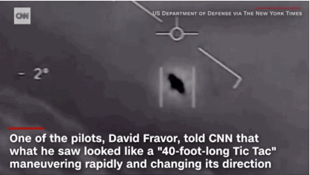
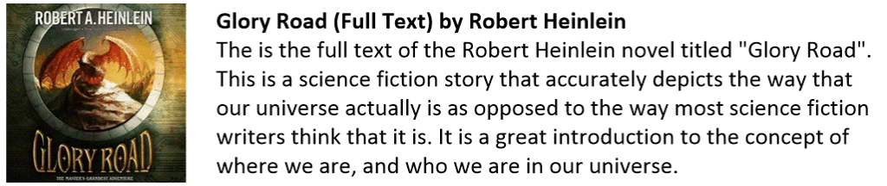

This is part seven of a multi-part post
Other reports and investigations…
I’ve only posted for a year, and already there are “others” on the Internet that want a piece of this “action”. How fucking silly.
There are others on you-tube and other places saying they are you, and /or possess other documents such as notes, files or the like. Can this be true?
No. There is only one blog. This is it. There are no other documents, papers or photos. There are no notes. No videos, and I most certainly will not “come back” to clarify anything.
Anyone doing so is FAKE.
Additionally, please make sure that the “newly discovered” manuscript is the real one and not a massaged revisionist version.
One discrediting-binder solution is to flood the Internet with so many variations of edited manuscripts that the real and actual one can’t be located.
Check the digital ID.
I urge all readers to “call out” such fakes immediately. Also, I must add, actual photographs of who I am are included in this manuscript. It will be pretty difficult to fake my appearance.
In any event, have the “fake” version of me get an MRI and scan for the seven ELF probes and the singular EBP. I will be really impressed if they have ELF probes and EBP that match mine. We can compare MRI’s.
It’s pretty fucking difficult to forge an MRI result.
Regrets
A nice question. It shows some humanity. ‘Bout time.
In one section of the blog you say that you regret the decisions that you made, and in other sections you say the exact opposite. Which is it?
Neither and both.
It depends on which aspects of my life we are discussing. There is no direct black and white answer that presents itself to the investigator. On one hand, my life right now is really very nice and comfortable. However, to get to this point I had to go through a lot of anguish including prison in the Deep South.
On one hand, my wife and family are awesome. On the other, I had many years of living “hand to mouth”.
On one hand, the apparent success of my former classmates and colleagues haunt me. On the other, I am now doing much better than any of them are.
There is no direct and simple answer to the questions. I guess that it all depends on how I am feeling at the moment. I try to keep my emotions and thoughts positive. That is because (I am underlining this point) thoughts create my reality.
So, I surround myself with happy and attractive people. I eat good healthy food, and share it with people whom I love. I have made a habit of turning off, and tuning out, from most of the hyper-negativity of American media.
And I have surrounded myself with light sunny people like this…
And like this…
I do surround myself with happy and cheerful people. I try my best to be positive, and that does require that I control my thoughts. If you want to have a good life, then get a GRIP on your thoughts.
You MUST surround yourself with fun, happy people.
You need to eat good food. Life is too short to eat poor quality food. You need to savor every bite and share the meals with others. You need to bring sunshine to your life.
That is why I surround myself with happy, lovely girls.
Generational Cycles
It was only a matter of time…
Why do you use the unproven theory of generational behaviors to describe nursery management?
Human Sentience Nursery Management is a subject that is “new” and not described elsewhere. Do you, the reader, know anywhere else where this subject is broached?
It consists of the intentional cultivation of human sentience so that the human species can evolve into a suitable soul configuration archetype.
There is absolutely nothing available on this subject anywhere.
To describe how this system works, I as an author, need tools or examples to describe the complexities of mass human manipulation.
The closest that I have found to exist is the generational behavior theory. It is only an unproven theory. However, it is all that is available to me at this time. I use the tools available to me.
I use the tools available to me.
Sure, it’s wonderful to eat a gourmet hamburger with an ice cold beer, but sometimes to take what’s available to you at the moment.
Reptilians
Sigh. Why is everyone so caught up on this fantasy. Good golly!
What about the “reptilians”?
I have never met a “reptilian”, nor have I any contact with MAJestic literature regarding such a creature.
From what I can gather, all the internet information regarding these race(s) of creatures are fabricated falsehoods.
While there are certain species that have coincidental similarity to the reptilian archetype, the significance ends there.
Have I made myself clear?
Vices
I do love to practice freedom.
Those who are control freaks, busybodies, religious extremists, and the emotionally deranged hate that.
They want to control me. They want to control what I do, how I act, where I act, and everything else. They use excuses, but the fact remains that they are just insecure busybodies. They never grew up. They are still the spoiled petulant child that is always knocking over game boards, and hitting the other children.
Why do you talk positively about the filthy habits of drinking and smoking? Don’t you realize that people get addicted to these vices and many people die as a result of them?
What? You left out whoring.
I fully realize that there are people who can get addicted to many things. I feel sorry for them, but it is NONE of my business.
If I want to drink, smoke, eat fatty foods, indulge in any vices at all I will do so.
It is no one else’s business but mine, and mine alone.
I like to drink, especially red wine.
I do smoke on occasion, and I DO enjoy it. I also enjoy chewing betel nuts, eating (very crispy) bacon, and of course having lot’s of sex. What’s not to love?
Many cultures label these things as “vices” so that one group of people can exert control over a another group. It is no one else’s business but my own.
One of my “best friends” died of a drug overdose. So I do know about this issue on numerous levels. Oh Robbie. We used to fish brook trout together, climb the hills of Western PA in the International Harvester Scout that we called the "Scout-er-roo", and toke and drink while playing chess and listening to Neil Young. The last thing that he said to me was... "I've seen the needle and the damage done, and I cannot go back." I tried to tell him that there were perfectly acceptable ways to get a buzz on, but he wanted "extreme". But, you know, extreme is not something you do when you are in your forties. Your body is not up to the challenge.
I once lived in a place were we were not permitted to drink, smoke or have sex. It was a very safe place. It was called prison.
Busybodies have been given free reign for over 200 years. It’s long overdue to put them in the place where they belong; out of sight and out of mind.
“Give me books, French wine, fruit, fine weather and a little music played out of doors by somebody I do not know.” -John Keats
If you are not living your own life on your terms, and your terms alone, you really aren’t actually living.
You are existing.
This world has all kinds of invisible “walls” and barriers to help “keep us in line” that forges acceptable behaviors and actions. Some are established by our parents, some by society, some by laws, some by busybodies with power, and some by our education.
When you break out of the molds that we have grown accustomed to, we discover that many things that we thought were forbidden are now open to us.
I am not talking about actions that invade other people’s lives or privacy. Of course, those things are wrong. Instead I am discussing how you live your life, within the confines of your own reality.
It’s all up to you, because it is all under your own control.
The Pretty Girls at the Dimensional Portal
It’s one of those things… one of those mysteries that sit there that I wonder about.
Concerning those pretty and beautiful women that entered the dimensional portal with you, did you ever see them again? Do you know what their mission was, or what happened to them?
I know nothing of the other beautiful woman that I entered the portal with. I do not know what happened to them after I entered the portal. I do not know their mission. Or, aside from the handout that we mutually filled out, whether or not we were related in any way. I just simply do not know.
They might have been [1] “Black Widows” who were used to retire agents.
- The Kiss Of The ‘Black Widow’: 17 Women Who Murdered their husbands.
- Black Widow Killers – Women Who Killed for Money
- 12 Female Poisoners Who Killed With Arsenic | Mental Floss
- Top 10 Most Cruel Wives in the History – WondersList
- Woman Kills Husband For Insurance Money
They might have been [2] part of an attractive spy-network where they might marry other important people and compromise their roles. The female that you see all the time on 007 movies.
They might be [3] part of an “off world” breeding program.
- The Nazi breeding and infanticide program
- Captive breeding programmes: an essential tool
- Is it ethical to selectively breed humans?
They might be [4] agents like myself, but in a different role.
I really do not know for sure what they were nor their roles in regards to mine. I do not know what happened to them. However, from time to time, I see a photo (often an “impossible” photo) that has a recognizable face. However, I must dismiss the connection and similarity as merely coincidence.
Moving to China
I do get this from time to time. Seriously, I get this about once every two months or so.
Why did you go to China and other nations once you left prison? Why did you stay in the United States and do your best to start over again in your homeland?
It is nearly impossible to start “over” as a college-educated professional, sex offender, felon in the United States. Note, that I did not say “impossible”, I specifically said “nearly impossible”.
I am sure that there might be an occasional rare engineer, doctor, or lawyer who was convicted as a sex offender that somehow, against all odds stacked up against them, managed to obtain work in their former capability in the United States.
They might exist, though they would absolutely be the exception rather than the rule.
I ask the reader to do this; find a doctor in the United States (working at a hospital) that still has their medical license after being charged with a felony. Then, once you are able to do that, locate an engineer with a PE license after having a felony. YOU WILL FAIL.
My decision to leave the United States was a pragmatic and practical one that absolutely worked out just fine for me. I made the right decision. There is no need to parse my decision tree.
Biological artifice drone location
This is a good question and deserves clarity.
Why do you think the biological artifice drone was located at the Oxia Palus facility on an alternative world-line Mars?
I do not know the true and actual reasons for this. In my mind the overriding considerations were related to safety and security.
Only MAJestic members (with a “service to others” sentience) could ever be able to enter the facility. This means that they had to have, at the bare minimum, a set of core kit #1 probes in their skulls.
Non-implanted humans cannot reach the facility, even if they possessed the coordinates and knowledge of the dimensional transport gate technology.
I also do not know what makes the world-line so “safe”.
The Mars that the facility was at seemed quite similar to the Mars that we see in our NASA photographs. Therefore, I am actually a little unclear as to why it had to be on a “safe” alternative world-line.
Isn’t being on Mars remote enough for most non-MAJestic humans to access?
I can only conclude that the extraterrestrials know some things that I don’t. I also can easily conclude that dimensional teleportation is a mature and day-to-day activity for them, and they think nothing at all about having “safe world lines”.
I guess it is along the lines of why we have locks on doors, AND “door chains”, and “peep holes” as well.
Experts
There are many experts who have looked over what you have written and have concluded that all of it is nonsense. What is your response?
That’s ok by me.
UFO’s
The term “UFO” refers to unidentified flying objects. When I flew, I always knew what I was flying in. Nothing was ever unidentified.
Why do you know so much about the Oxia Palus facility, but very little about UFO’s?
I only know what I was exposed to.
Yes, there were various “vehicles” of uncommon design and utility that <redacted>, but they weren’t a critical or core mission objective of mine. The very few instance of exposure that I had was not worthy of mentioning here.
In all cases, I can only describe these contraptions in conjunction with my exposure to them.
What I do know is that the earth has many extraterrestrial and multi-dimensional visitors, and they travel in strange and unusual vehicles. Because they are strange and of unusual appearance and propulsion method they are classified as UFO’s.

Those who debunk observed UFO’s, for the most part, are ether [1] paid shrills or [2] simplistic fools who enjoy the notoriety. I can positively affirm that the United States government treats all UFO’s and USO’s with the upmost importance.
Anyone who doesn’t is a simpleton.
1980’s under Ronald Reagan
I lived through the 1980’s. I have discovered that on this world-line, the 1980’s is treated as some kind of “dark ages” and a time of horror. Granted, I was on a different world-line, but it wasn’t that different.
You claim that the 1980’s were a time of hope and prosperity, but you were unemployed at that time, and my teachers have all uniformly told me that it was a terrible time. Why are you so out of touch with reality?
The 1980’s were a time of prosperity.
I was able to travel the country while the American economy went through a reset. Can the reader actually do that today?
The information that is being presented (on the Internet) regarding the 1980’s are mostly inaccurate and presented through the eyes of social justice warriors who wish to redefine the past to fit their narrative.
Just go through the index log for Wikipedia for the 1980’s look at all the changes that the Obama administration made. Gawd! They were “hell bent” on actually rewriting history.
Here’s some other articles on this particular subject….
I lived through that time, therefore I experienced that time.
Thanks to our collective obsession with all things nostalgia, my ’80s childhood never seems far from my mind; especially when it comes to how I was raised. Was it free-range parenting or benign neglect? In my case, I was raised by a single mother who worked during the day. My younger brother and I were not supervised during those hours, but it wasn’t because of any staunch parenting ideology. This was just life. And you know what? I cherish every memory from that time. Sometimes when I let my mind take me back to those days, it all comes rushing back into view more clearly than I’d expect … Tuesday, July 12, 1983 — Bielanko house, the ‘burbs of Philly. 8:15 AM I’m 12 years old, and the first thing I hear upon waking is the sound of my mom’s car starting up below my bedroom window. Birds chirp and trash trucks moan three blocks away. She drives away. I slam my feet against the particle board bottom of my younger brother’s top bunk to wake him up. We had stuff to do — there wasn’t a minute to waste. At our little kitchen table, I help myself to breakfast by dumping a pile of Cap’n Crunch into a bowl and then sliding the box across to my brother. Nothing in our pantry says “organic” or “non-GMO” — we wouldn’t even know what that means if it did. Then I squeeze a fat ribbon of Hershey’s chocolate syrup all over that cereal before I pour the milk on. That way, I have chocolate milk on my Cap’n Crunch, dude. Chocolate milk. On Cap’n Crunch. AMAZING. 10:07 AM My brother Dave holds a fat crayfish between his thumb and his finger as he balances himself on two shaky rocks in this crick down in the cool part of the park. There’s a lot of trash down here — junk tires and broken beer bottles that the high school kids like to break at night, when they’re done drinking. There’s nobody here now, though. No older kids. No parents. There’s just me and Dave and our crappy, beat-up bikes parked over there by a tree. Sometimes a “Bigfoot” will walk by us in the woods when we’re down here crayfish hunting. In reality it’s not Bigfoot, but typically an unemployed guy in his twenties trying to find a place to drink a beer or smoke weed without getting popped by the local cops. They never bother us. Sometimes they light up a cigarette and watch us look for crayfish for a minute or two. I get the feeling they used to do the same thing once upon a time. “Wanna see if those guys are up yet?” I ask Dave. He nods and drops his creature back into the crick. It’s baseball time, people. We ride off on our bikes to grab our gloves out of our house, and find our friends to get a game going. 11:02 AM We play some baseball in a nearby vacant lot. There’s more broken glass here. There is always broken glass in our lives, I guess. Nobody cares — you go down, you get sliced, and you keep playing, unless it’s a real gusher. And even then, you’ll be really ticked off if you have to head home to get a tourniquet wrapped around your knee or whatever. Our gang, we’d rather bleed to death than walk away from a ball game. That’s the way things ought to be, too. Some days we play ball out under the blazing sun for three hours straight, only stopping to hit up the candy store, maybe, for a soda and a chocolate bar or some Swedish fish. If you have extra cash or you might have stolen a buck from your mom’s wallet last night, well, then you might get a pack of baseball cards as well. But mostly we pour cold Cokes down our hatches and it feels like neon lighting up our veins. Related Post I Took My Kids to an "Adventure Playground" and Gave Them a Taste of an '80s-Style Childhood 2:11 PM I haven’t spoken with a single grown-up since I woke up this morning. Well, except for the candy store lady, but she’s always cranky and just stares us down to make sure we don’t steal any licorice or Mars bars. My brother and I ride our bikes down to the 7-Eleven. We don’t wear helmets or pads — no one does — and we cross streets with a lot of cars on them, streets where people have been known to die if they forgot to look. But we always look. Hey, we don’t want to die. We each head out with 64 ounces of Kamikaze (which is basically five fountain sodas mixed together) and a convenience store hotdog made from God-knows-what. 2:19 PM The phone on the table by the couch in our house rings seven times and then goes dead. It’s my mom, calling to see if my brother and me are around; to see if we’re doing alright. We’re not home, though. We never are when she calls. She loves us so much, but we’re out in the world, down at the 7-Eleven. Basically, she has no idea where we are. And yet, she’s not really worried at all. 4:42 PM We’re listening to a KISS record in a buddy’s basement, while his dad chain-smokes cigs and gives us iced tea. It’s an afternoon well spent. 7:37 PM We’re back at home, sitting next to my mom on the couch. We smell like shampoo and ice cream. Dave and I are tired and so is my mom, but it’s a good tired. We watch some sitcoms. My mom laughs. I get up and go into the kitchen and grab a can of soda. I crack it open and it hisses and fizzes as I raise it to my sun-chapped lips. “Serge,” my mom says from the couch. “No more soda. Have some milk instead or you’re gonna turn into a soda!” I smile even though she can’t see me. “I am having milk, Mom!” I shout back at her. The TV plays on and on; a long moment passes. “No, you’re not,” she mumbles, before adding once more, “You’re gonna turn into a soda!” *** Even now, all these years later, as I sit here on the other side of 40 with three kids of my own — a man far removed from the summers of my youth — you wanna know something? I still haven’t turned into a soda yet. -Babble. I strongly suggest you all give this website a visit. There is some great stuff here. Though you will need to join Facebook to read and make comments. Then they will post your Facebook information along with the comments. Seems pretty sick to me.
CARET Hoax
Why do you present the C.A.R.E.T. hoax in this manuscript?
Because it is NOT a hoax.
Extraterrestrial Abilities
Yes. There are these people out there.
Extraterrestrials would not need to use 7th Dimensional technology to achieve their project goals. Why did you go into such an elaborate hoax?
Wow. I am impressed!
It’s good to know that someone can understand a specific extraterrestrial species that they had never met, and understand their technology without even seeing it.
Since you know so much about the interests and motivations of another species, why read this blog and associated manuscripts? Why not write your own?
For the record, I am only describing what I know relative to what I have experienced.
If it seems like a hoax, well so be it.
I just don’t give a flying fuck what you think. I am writing this for humanity, and not for any specific person.
Most individuals do not want to know the truth, or even understand it. They are just comfortable knowing that they can be absolutely horrible people, and then ask forgiveness… Poof! All is clean again.
It just does not work that way. Anyone telling you that it does is no better than a “snake oil” salesman trying to fleece you.
Reincarnation
Yes there are connections. Just because something is sanctioned by a popular movement, a government or a noted scientists on a “blue ribbon panel” does not make it true.
There is a great deal of similarity between [1] the reincarnation of souls into a physical body, and [2] physical artifices. Is there a connection?
Yes. A society of a given species, given the proper level of technology, would utilize artifices to advance their species. Advancement of a species would include growth.
Is that not what is going on with reincarnation?
Instead of saying “reincarnation is a soul creating multiple physical bodies to occupy and gain experiences”, why not simply state “a soul will create artifices to obtain experiences and thus amplify its growth and advancement.”
Glory Road
You have stated that you thought the Heinlein novel “Glory Road” was the closest representation of the reality that you have described. Why do you say this?
The story “Glory Road” describes [1] a technology so advanced that it appears as magic (or magick) by the hero in the story.
Yet, the technology is many thousands of centuries advanced than human civilization. [2] It utilizes MWI to traverse the universe, and [3] involves the collection of a device (a “egg”) that is an artifice used to enhance the skills and abilities of one of the major characters in the story.
These factors are all very similar to what I have experienced.
Also most importantly, [4] it discusses how “coincidences” were really arrangements made (without the main character’s knowledge) that forced the person to take certain actions.
These arrangements were made by a “princess” with control of great technology, who could (to some degree) predict probable outcomes as a result of the pre-made arrangements.
The reader should not get confused, or be silly. No. I did not go walking around with a sword and a bow and arrow. I did not conduct feats for a princess, nor was I ever tended by her manservant.
Yet… were it part of my desired reality, they very well could have manifested to my great pleasure and even greater chagrin.
Here is the complete novel for your reading pleasure…

If you want to go to the start of this series of posts, then please click HERE.
MAJestic Related Posts – Training
These are posts and articles that revolve around how I was recruited for MAJestic and my training. Also discussed is the nature of secret programs. I really do not know why the organization was kept so secret. It really wasn’t because of any kind of military concern, and the technologies were way too involved for any kind of information transfer. The only conclusion that I can come to is that we were obligated to maintain secrecy at the behalf of our extraterrestrial benefactors.


MAJestic Related Posts – Our Universe
These particular posts are concerned about the universe that we are all part of. Being entangled as I was, and involved in the crazy things that I was, I was given some insight. This insight wasn’t anything super special. Rather it offered me perception along with advantage. Here, I try to impart some of that knowledge through discussion.
Enjoy.


Influencer Questions
Here are posts that have gathered a series of questions from various influencers. They are interesting in many ways and could help all of us unravel the mysteries of the lives that we live.

MAJestic Related Posts – World-Line Travel
These posts are related to “reality slides”. Other more common terms are “world-line travel”, or the MWI. What people fail to grasp is that when a person has the ability to slide into a different reality (pass into a different world-line), they are able to “touch” Heaven to some extent. Here are posts that cover this topic.


John Titor Related Posts
Another person, collectively known by the identity of “John Titor” claimed to utilize world-line (MWI egress) travel to collect artifacts from the past. He is an interesting subject to discuss. Here we have multiple posts in this regard.
They are;